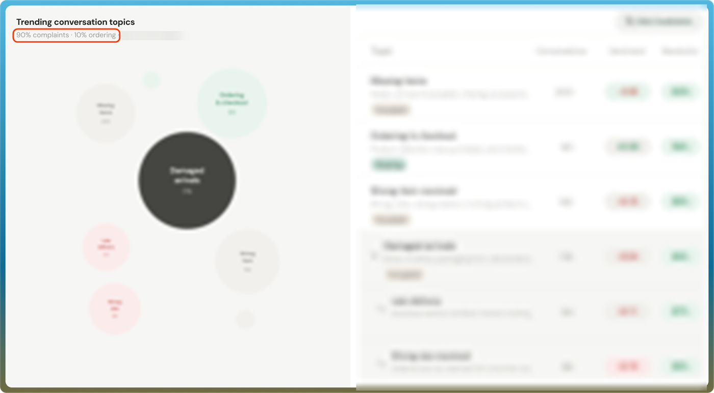
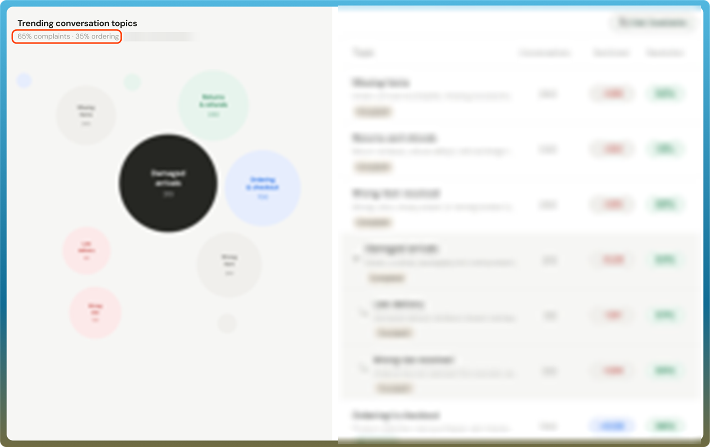

OmniRetail · Omnibiz
Speech-to-Order: Separating Ordering From Support
Roughly 9 in 10 voice sessions were complaints, not orders. This is how I made the assistant's purpose clear, and what moved.
Context
Omnibiz is OmniRetail's B2B commerce platform, serving 150,000+ retailers across Nigeria, Ghana, and Ivory Coast and processing $124M+ in annual NMV. Speech to Order was intended to let retailers order FMCG products by speaking instead of typing — built for low-literacy and high-volume users who need speed on mobile, often on slow networks.
I owned the design of the experience. This case study is mainly about one question: retailers were using the assistant, but not for what it was built for. A related gap, that retailers didn't know the assistant had two modes, chat and call, or that they could place an order by calling, has its own section further down.
This work was done in April 2026. The design has been updated a lot since, so the screens in the main story show that early version, and the last section shows where it stands now.
The Problem
When we reviewed usage, roughly 90% of voice sessions involved complaints rather than orders. Retailers were finding and using the assistant, but its presentation wasn't making its purpose clear.
The split came from an ElevenLabs voice interaction report and our internal analytics dashboard. The original interface was a direct, unguided speech input with no context about what it could do, so retailers treated it as a support channel and the same interface never signalled that it could also take an order.
Trending Conversation Topics
Illustration of the ElevenLabs topics view, with the reported split of about 90% complaints and 10% ordering. Topic names, counts and rates are blurred because they are not measured Omnibiz figures.

Old Flow
Research & Discovery
Findings came from two sources: an ElevenLabs voice interaction report and the team's internal usage analytics dashboard.
Both pointed to the same root issue — the interface gave no upfront guidance on what it could do, so retailers defaulted to treating it as a support channel. Adoption wasn't the problem. Retailers were using the assistant, but use didn't mean ordering.
Redesign Approach
My goal was to help retailers tell ordering and support apart. I reworked the wording and interaction to create a clearer separation between the two, then refined the experience through feedback from retailers.
The interface now sets expectations upfront, so retailers know they can place an order, not just ask for help.
New Flow
Tapping the button now offers two clear paths: place an order or raise a complaint. Choosing to place an order then offers two ways to do it, chat or call.
Testing & Iteration
We assessed the change through conversation logs, usage reports and retailer feedback. The team also ran field tests with real retailers and kept refining the flow from post-launch usage data, rather than treating launch as the end.
Two Weeks After The Updates
Illustration of the ElevenLabs topics view, with the reported split of about 65% complaints and 35% ordering. Topic names, counts and rates are blurred because they are not measured Omnibiz figures.

Outcome & Impact
Over the two weeks after the updates, complaint interactions fell from roughly 90% to 65% of voice sessions, while ordering interactions rose from 10% to 35%.
Complaint Sessions
90% → 65%
Share of voice sessions that were complaints, before and after the updates.
Order Sessions
10% → 35%
Share of voice sessions that were orders, before and after the updates.
Window
2 weeks
Measured over the two weeks after the updates.
Not Fully Resolved
That was meaningful progress, although complaints still accounted for most voice sessions, so the problem wasn't fully resolved.
Before the updates
Two weeks after
Also Shipped: Making The Two Modes Visible
Alongside the support-versus-ordering work, there was a second gap. The assistant had two modes, chat and call, but retailers weren't told they could place an order by calling at all. If you didn't know ordering by call existed, you couldn't choose it.
The change was to make both modes visible inside the interaction, so retailers could see they had a choice: after choosing to place an order, they pick Via Chat or Via Call.
Two Modes, Made Visible
After choosing to place an order, retailers see both ways to do it, chat or call.
A Real Constraint, Not Glossed Over
The chat and call options saw real internal pushback around not storing conversation data for customers. Persistent conversation memory — the more seamless version of this feature — didn't make it through, because of legitimate data-storage concerns. What shipped respects that constraint rather than working around it.
Where It Stands Now
The results from this April work helped persuade the company to put a better plan behind how this is managed. The design has changed a lot since then, and this is what it looks like today.
Current Design
Next Steps
Complaints still make up most voice sessions, so there are areas where the assistant can be improved further:

Understand Complaints
Break the remaining complaint sessions down by topic, to see which ones the product can fix and which need support.
Track The Split
Keep measuring complaint against order sessions with a fixed definition and window, so the trend can be trusted.
Make Both Modes Known
Keep refining how chat and call are introduced, so more retailers know they can place an order by calling.
Reflection
The main lesson was that usage alone wasn't a useful sign of success. Retailers were finding and using the assistant, but most of that use was complaints. We needed to understand what retailers were trying to do and whether the experience was helping them do it.
The fix wasn't more advanced AI, it was clearer product framing — telling retailers upfront that ordering and support are different things. It moved the split meaningfully, but not all the way, and complaints still being most sessions is the open problem.